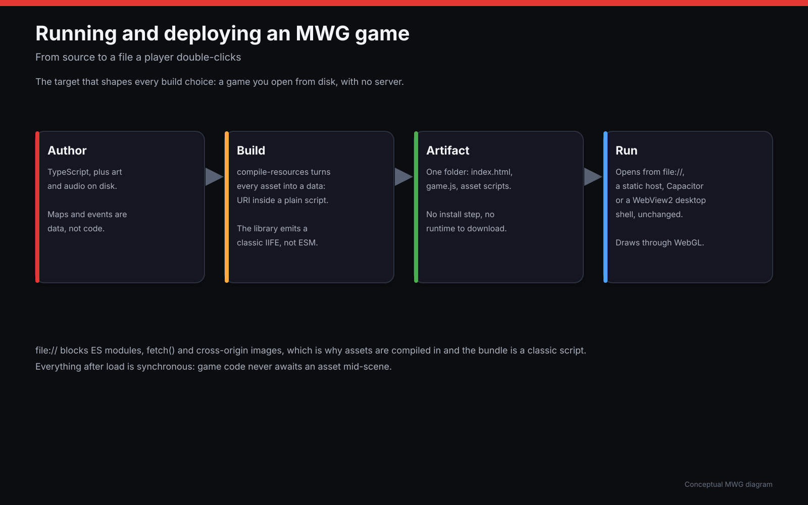
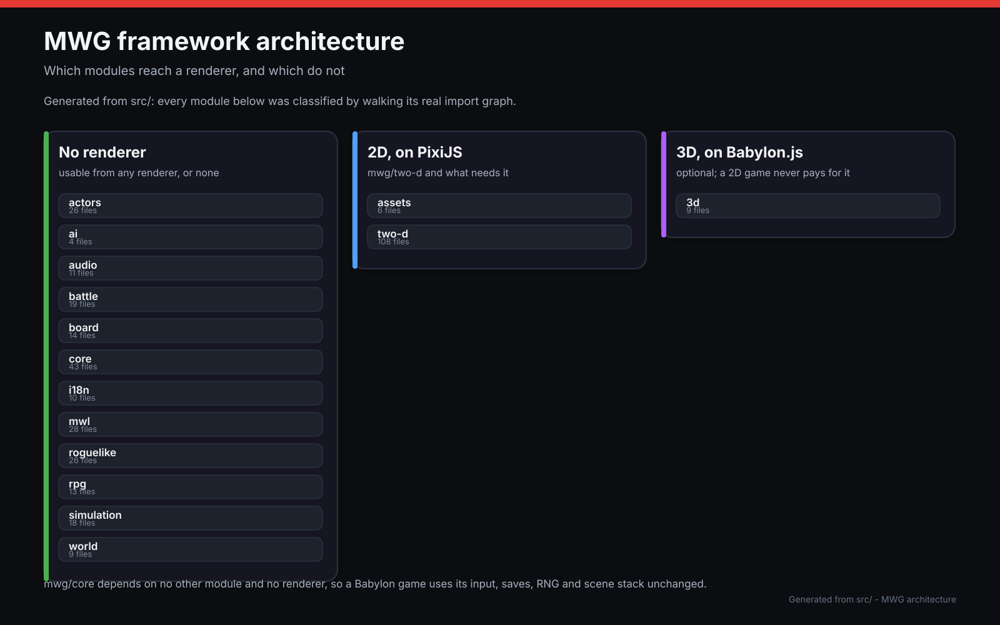
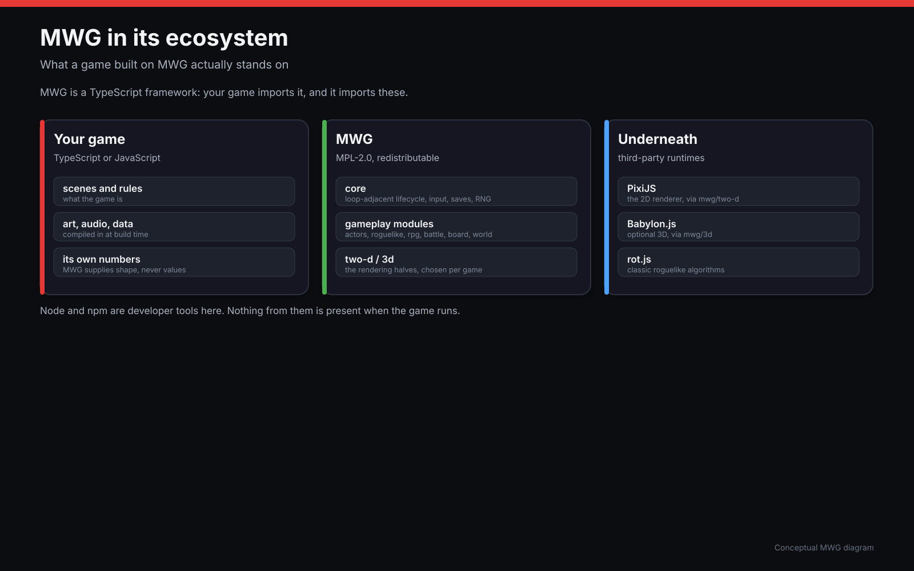
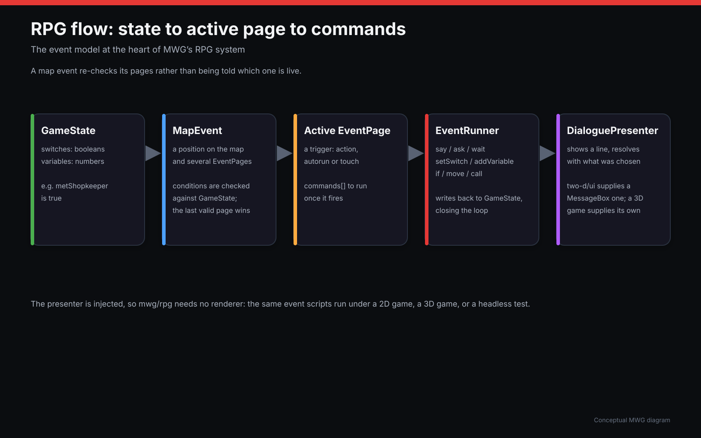

why it looks like this
Design choices
mwg's shape follows from one target, held hard everywhere else has to bend around it: a game you open by double-clicking a local file. No server, no install step, no Node.js on the player's machine. Everything below - the build pipeline, the module boundaries, which libraries it stands on, how its own RPG data model works - is either a direct consequence of that constraint or a deliberate choice made once and then held to consistently, documented here so it does not have to be re-derived by reading source.
The file:// constraint
Both fetch()/XHR and <script type="module"> are
blocked from file://, and Chrome treats a same-folder
<img> as cross-origin for WebGL. A game built with an ordinary
bundler simply will not run from disk. mwg's answer is to do the network-shaped
work once, at build time, rather than ever asking the player's browser to do it:
tools/compile-resources.mjs turns every asset into a data:
URI inside a plain script (grouped by folder, written to a global
window.__MWG_ASSETS__), and the library build emits a classic IIFE
instead of ES modules. tools/emit-page.mjs is the last build step for
every example: it rewrites Vite's own module entry tag to a deferred classic
script and inlines the compiled asset scripts ahead of it, in document order.
The result reaches the player two ways, both landing on the same built output:
a <script> tag and mw_games.global.js with no
install step at all, or npm install @datamoc/mw_games plus a bundler
for development - either path compiles down to a page that opens from disk with
nothing else running.

Module boundaries
mwg is organized into modules a game imports only as needed, not one framework
object a game configures. core never imports from any other
module - Game takes a GameOptions.extensions array of
Pixi-extension registration functions instead of reaching into
render itself, so a game that only imports mwg/core
never pulls in mwg/render at all. The same discipline holds one
level up: render.ColorTransformBatcher.ts is the only file allowed
to know about Pixi's batcher/high-shader internals, and every genre-specific
module (rpg, battle, roguelike,
board) builds on the shared floor without the shared floor knowing
any of them exist. A game using roguelike, actors, and
world together still never pulls in battle or
board - the composition principle the diagram below names directly.

Where mwg sits in its ecosystem
mwg is not a renderer or a pathfinding library with a game framework's name on
it - it is the layer between a game's own code and the lower-level libraries that
actually draw pixels and compute algorithms. PixiJS
owns 2D rendering (sprites, tiles, the WebGL/WebGPU path); rot.js
owns the roguelike algorithms mwg's own roguelike module builds
on (field of view, pathfinding); Babylon.js
is an optional peer dependency for the 3d module alone, never
required for a 2D game. mwg keeps rendering on a GPU-accelerated path throughout -
a silent Canvas 2D fallback anywhere in the render path would be a regression, not
a convenience - and re-evaluates that choice on an ongoing basis rather than
treating it as settled once and forgotten (see "Rendering backend policy" in this
repository's own CLAUDE.md/AGENTS.md, not reproduced
here since it is a standing engineering policy rather than a fact about a shipped
feature).

The RPG event model
mwg/rpg's event system is kept as three small, separable pieces
rather than one interpreter that owns everything. GameState is
nothing but switches and variables - plain enough that a save system can
serialize it like any other data. A MapEvent is a position plus an
ordered list of EventPages, each with its own conditions;
activePage() picks the last page whose conditions all hold,
the same convention RPG Maker uses, so an event reads as "default behaviour, then
increasingly specific overrides" rather than a chain of if/else. Once a page is
selected, EventRunner interprets its commands - dialogue,
switches, variables, branches, movement - against that same GameState,
writing its effects out to a game's own WindowStack/MessageBox
or map. Nothing here is specific to a shopkeeper or a cutscene; the
village and event-system examples both build on exactly
this shape, one with a full map around it and one without.
